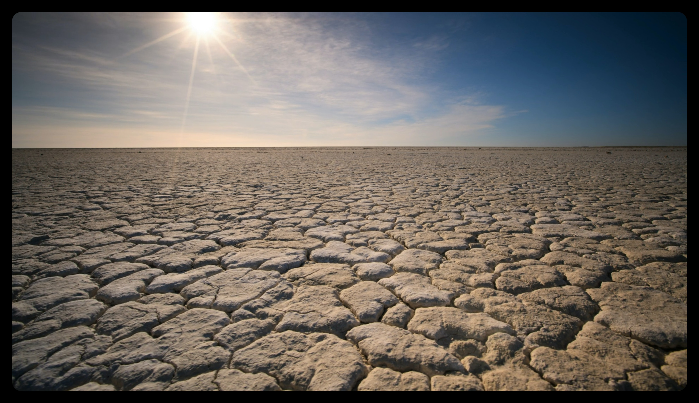
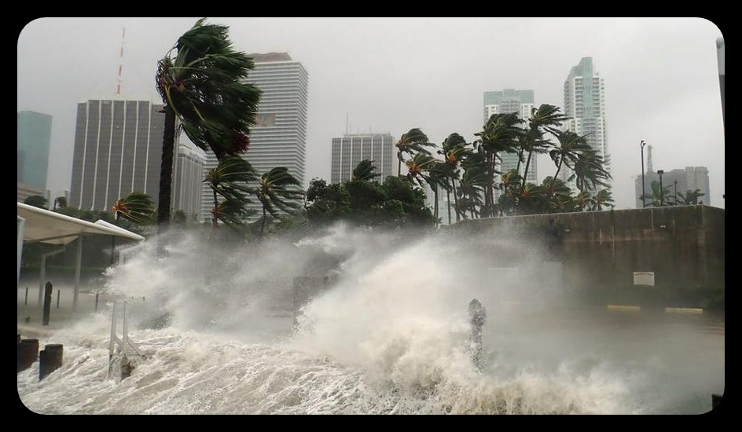

Climate change affects global temperature and precipitation patterns. These effects, in turn, influence the intensity and, in some cases, the frequency of
extreme environmental events, such as forest fires, hurricanes, heat waves, floods, droughts, and storms.With increasing global surface temperatures the
possibility of more droughts and increased intensity of storms will likely occur. As more water vapor is evaporated into the atmosphere it becomes fuel for
more powerful storms to develop. More heat in the atmosphere and warmer ocean surface temperatures can lead to increased wind speeds in tropical storms.
Rising sea levels expose higher locations not usually subjected to the power of the sea and to the erosive forces of waves and currents.
Wildfire
Climate change has been a key factor in increasing the risk and extent of wildfires in the Western United States. Wildfire risk depends on a number
of factors, including temperature, soil moisture, and the presence of trees, shrubs, and other potential fuel. All these factors have strong direct or
indirect ties to climate variability and climate change. Climate change enhances the drying of organic matter in forests (the material that burns and
spreads wildfire), and has doubled the number of large fires between 1984 and 2015 in the western United States.
Research shows that changes in climate create warmer, drier conditions. Increased drought, and a longer fire season are boosting these increases in wildfire risk.
For much of the U.S. West, projections show that an average annual 1 degree C temperature increase would increase the median burned area per year as much as 600
percent in some types of forests. In the Southeastern United States modeling suggests increased fire risk and a longer fire season, with at least a 30 percent
increase from 2011 in the area burned by lightning-ignited wildfire by 2060.
Once a fire starts—more than 80 percent of U.S. wildfires are caused by people—warmer temperatures and drier conditions can help fires spread and make
them harder to put out. Warmer, drier conditions also contribute to the spread of the mountain pine beetle and other insects that can weaken or kill trees,
building up the fuels in a forest.
Land use and forest management also affect wildfire risk. Changes in climate add to these factors and are expected to continue to increase the area
affected by wildfires in the United States.
Droughts

Scientists see a clear correlation between droughts and global warming. But a correlation between two events doesn’t always mean one caused the other.
For example, ice cream sales often increase around the time that baseball game attendance rises, but that does not mean that eating ice cream causes people
to attend baseball games. Nor does it mean that attending baseball games causes people to eat ice cream.
It can be tricky to attribute an increase in droughts to global warming because droughts are variable. In other words, they can occur every year or every
few years, last for years or decades, and cause varying levels of dryness. That makes it difficult to distinguish random events from those possibly shaped
by human-caused warming. However, the more drought dovetails with trends of increasing temperature, decreasing precipitation, and with computer model
projections, the more confident scientists are in pointing to climate change.
In a 2020 study in the journal Science, for example, researchers observed how human-caused climate change is contributing to the 21st-century megadrought
in the Western U.S. and northern Mexico by evaluating trends in modeled temperature, relative humidity, and precipitation data between 1901 and 2018.
According to the study’s findings, human-caused warming accounts for 46% of this drought’s severity.
What about the rest of the world? Scientists have been cautious about linking human activities to global drought patterns, largely because drought hasn’t
occurred as uniformly worldwide as it has across individual regions. That said, building evidence supports the climate change-drought connection on a global scale.
Flood
Connecting climate change to floods can be a tricky endeavor. Not only do myriad weather- and human-related factors play into whether or not a flood occurs,
but limited data on the floods of the past make it difficult to measure them against the climate-driven trends of floods today. However, as the IPCC
(Intergovernmental Panel on Climate Change) noted in its special report on extremes, it is increasingly clear that climate change “has detectably influenced”
several of the water-related variables that contribute to floods, such as rainfall and snowmelt. In other words, while our warming world may not induce floods
directly, it exacerbates many of the factors that do. According to the Climate Science Special Report (issued as part of the Fourth National Climate Assessment,
which reports on climate change in America), more flooding in the United States is occurring in the Mississippi River Valley, Midwest, and Northeast, while
U.S. coastal flooding has doubled in a matter of decades.
A warmer atmosphere holds and subsequently dumps more water. As the country has heated up an average of 1.8 degrees Fahrenheit since 1901, it has also become
about 4 percent wetter, with the eastern half of the United States growing soggiest. In the Northeast, the most extreme storms generate approximately 27 percent
more moisture than they did a century ago. Basically, because of global warming, when it rains, it pours more. Such was the finding of a study by the National
Oceanic and Atmospheric Administration (NOAA) examining the record-breaking rainfall that landed on Louisiana in 2016, causing devastating flooding. The study
determined that these rains were at least 40 percent more likely and 10 percent more intense because of climate change.
Looking forward, heavy precipitation events are projected to increase (along with temperatures) through the 21st century, to a level from 50 percent to as
much as three times the historical average. This includes extreme weather events known as atmospheric rivers, air currents heavy with water from the tropics,
which account for as much as 40 percent of typical snowpack and annual precipitation along the West Coast. Experts predict they will intensify, bringing as
much as 50 percent more heavy rain by the end of this century.
Hurricane

Hurricanes have become stronger worldwide during the past four decades, an analysis of observational data shows, supporting what theory and computer models
have long suggested: climate change is making these storms more intense and destructive.
The analysis, of satellite images dating to 1979, shows that warming has increased the likelihood of a hurricane developing into a major one of Category 3 or
higher, with sustained winds greater than 110 miles an hour, by about 8 percent a decade.
“The trend is there and it is real,” said James P. Kossin, a researcher with the National Oceanic and Atmospheric Administration and lead author of the study,
published Monday in Proceedings of the National Academy of Sciences. “There’s this remarkable building of this body of evidence that we’re making these storms
more deleterious.”
Kerry Emanuel, a hurricane expert at the Massachusetts Institute of Technology who was not involved in the study, said the findings were “much in line with
what’s expected.”
Here are some of biggest Natural Disasters Linked to Climate Change in 21st century